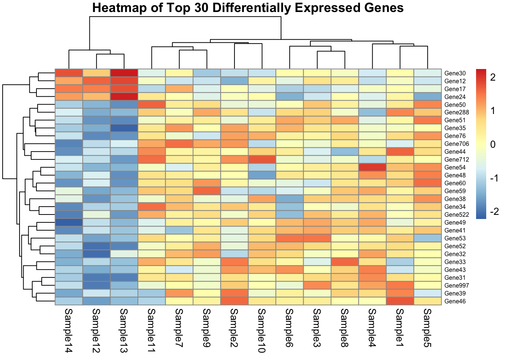

Q&A 6 How do you visualize the expression of a single gene with a boxplot?
6.1 Explanation
Once differential expression is complete, it’s common to visualize individual genes of interest. A boxplot shows how expression levels vary across conditions.
To make this plot:
- Use log-transformed counts (e.g., from rlog() or log2(count + 1))
- Select one gene of interest from the DE results
- Combine expression values with sample metadata
6.2 Python Code
import pandas as pd
import numpy as np
import seaborn as sns
import matplotlib.pyplot as plt
# üîπ Load and prepare data
log_counts = np.log2(pd.read_csv("data/demo_counts.csv", index_col=0) + 1)
metadata = pd.read_csv("data/demo_metadata.csv")
gene_to_plot = "A2M"
# üîç Check if gene exists
if gene_to_plot not in log_counts.index:
raise ValueError(f"{gene_to_plot} not found in count matrix.")
# üߨ Prepare long-form dataframe
df_plot = pd.DataFrame({
"expression": log_counts.loc[gene_to_plot],
"sample_name": log_counts.columns
}).merge(metadata, on="sample_name")
# üì¶ Boxplot
plt.figure(figsize=(5, 4))
sns.boxplot(data=df_plot, x="condition", y="expression", palette="Set2")
sns.stripplot(data=df_plot, x="condition", y="expression", color="black", alpha=0.6)
plt.title(f"Expression of {gene_to_plot}")
plt.ylabel("Log2 Expression")
plt.tight_layout()
plt.show()/var/folders/m1/0dxpqygn2ds41kxkjgwtftr00000gn/T/ipykernel_52778/1503619118.py:23: FutureWarning:
Passing `palette` without assigning `hue` is deprecated and will be removed in v0.14.0. Assign the `x` variable to `hue` and set `legend=False` for the same effect.
sns.boxplot(data=df_plot, x="condition", y="expression", palette="Set2")
6.3 R Code
library(tidyverse)
library(DESeq2)
# üîÑ Set seed for reproducibility
set.seed(42)
# üîπ Load and transform
counts <- read_csv("data/demo_counts.csv") %>%
column_to_rownames("gene")
metadata <- read_csv("data/demo_metadata.csv")
dds <- DESeqDataSetFromMatrix(countData = counts,
colData = metadata,
design = ~ condition)
rlog_counts <- rlog(dds)
# üîç Gene to plot
gene_to_plot <- "A2M"
if (!gene_to_plot %in% rownames(rlog_counts)) stop("Gene not found.")
# üì¶ Prepare dataframe
plot_data <- data.frame(
expression = assay(rlog_counts)[gene_to_plot, ],
sample_name = colnames(rlog_counts)
) %>%
left_join(metadata, by = "sample_name")
# üìä Boxplot
ggplot(plot_data, aes(x = condition, y = expression)) +
geom_boxplot(fill = "skyblue", alpha = 0.6) +
geom_jitter(width = 0.1) +
labs(title = paste("Expression of", gene_to_plot),
y = "Log2 Expression") +
theme_minimal()
✅ Takeaway: Use boxplots to clearly visualize how expression of a specific gene differs between conditions. Combine with DE results to validate biological interpretation.